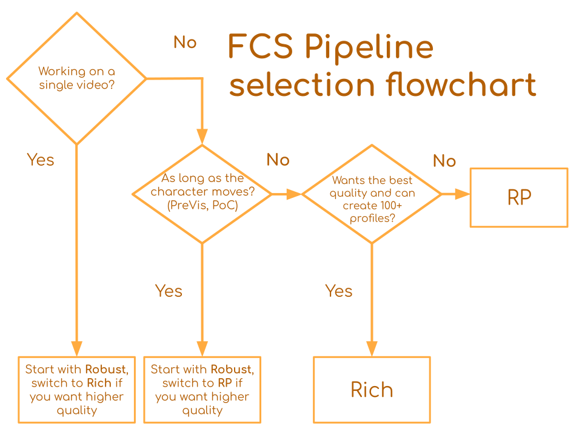

Pipeline Comparison¶
FCS comes packaged with multiple algorithms (pipelines) for processing footages.
Each of the pipelines are designed with different usage scenarios in mind. Here is a flowchat to help you determine which you should use.
Table of Contents¶
Just tell me which pipeline I should use.¶

Pipeline¶
For those who want more information about the pipelines: We currently offer three pipelines, Rich, Robust and RP. Rich is the default pipeline up until FCS 25.04, and starting with FCS 25.07 the default is RP.
Rich
This pipeline tends to be able to reproduce subtle movement in the character better when provided with large amount of profile (>100) and is generally your best pick for your effort if you work on a large scale projects (full length movies, game) and requires high quality animation.
RP
The RP pipeline functions as a less-effort-intensive alternative of Rich, by making it more robust to camera shift; thus, reducing the amount of profiles required. In exchange it tends to capture less subtle facial movement.
Robust
This is significant more adoptive to head rotation but less accurate. It is designed to work better when the number of profiles is extremely small (<10). Additionally, while unsupported officially, this pipeline would function better than the other two if the actor changes (the session contains footage of multiple actors).
By choosing the pipeline that best suits your situation, you can more easily achieve your goals of reducing your workload and improving quality.
Note that there you can change the pipeline anytime during the project. You will only have to check the reprocess box when processing the video, feel free to try the pipelines and see what works the best for you.
Experiment scenarios¶
To demonstrate the strength of different pipelines, we prepare 4 scenarios that reassemble potential ways to create profiles using FCS.
Baseline Only
Process videos using only the 50 baseline ROM profiles.
This scenario recreates the standard procedure of creating facial animation with minimal effort.Baseline + Video Profile 10
Process videos using the 50 ROM profiles and the 10 profiles picked up from within the video.
This scenario shows how the animation quality tends to improve by adding more profiles from the video.Video Profile 10 Only
Process videos using only the 10 profiles picked up from within the video.
This scenario shows the performance of the pipelines if you skip creating the baseline ROM profiles.Another Actor
Process videos of another actor using only the 50 ROM profiles.
This scenario simulate when the person that you created the profiles for is a different one than the one that you would like to process videos of (due to actor change etc.). This is not a supported use-case but we still provide a reference in case you are curious.
Gallery¶
Baseline Only
Performance Video |
Rich |
Robust |
RP |
|---|---|---|---|
Baseline + Video Profile 10
Performance Video |
Rich |
Robust |
RP |
|---|---|---|---|
Video Profile 10 Only
Performace Video |
Rich |
Robust |
RP |
|---|---|---|---|
Another Actor
Performance Video |
Rich |
Robust |
RP |
|---|---|---|---|
Conclusion¶
If you can afford to create a number of profiles from within the video that you are trying to process, or create a large amount of profiles across many videos (i.e., multiple days of filming), Rich tends to produce the best animation results amoung the three pipelines.
However, if you are unable (due to time constraint or otherwise) to create profiles from within the video that you want to process, Robust and RP will produce better results.
When there are a small number of profiles (>10), Robust is often the best option. As the number of profiles increases, Rich and RP become more effective.
Also, when processing the videos of another actor, you can make the animation result less likely to break down by selecting Robust.